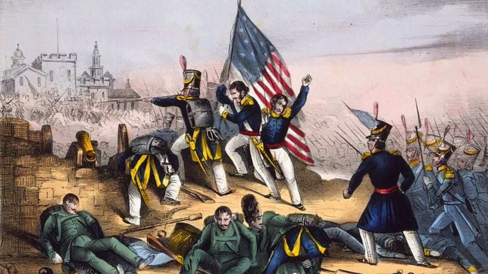

El conflicto territorial y militar entre
México y Estados Unidos durante 1846 y 1848.
Invasión de Estados Unidos (1846-1848)
Comenzó debido a la expansión territorial
estadounidense. En esa época, Estados Unidos
promovía la idea del destino manifiesto.
Esta doctrina afirmaba que ese país tenía
el derecho y la misión de expandirse desde
el océano Atlántico hasta el Pacífico.
Causas y desarrollo
1. Anexión de Texas
En 1845 Estados Unidos anexó Texas,
territorio que México consideraba propio,
lo que incrementó las tensiones entre
ambos países.
2. Inicio del conflicto
El conflicto armado inició oficialmente
en 1846.
Aunque el ejército mexicano demostró valentía,
enfrentaba problemas de organización,
falta de recursos económicos y divisiones
políticas internas.
3. Batalla de Chapultepec
Uno de los episodios más recordados es
la batalla de Chapultepec, donde un grupo
de jóvenes cadetes del Colegio Militar,
conocidos como los Niños Héroes,
defendieron el castillo frente a las
tropas estadounidenses.
4. Tratado de Guadalupe Hidalgo
El conflicto concluyó en 1848 con la firma
del Tratado de Guadalupe Hidalgo.
En consecuencia, México perdió aproximadamente
el 55% de su territorio, incluyendo los actuales
estados de California, Nuevo México, Arizona,
Nevada, Utah y partes de Colorado y Wyoming.

Intervención estadounidense en territorio mexicano.